6 NASA Earth Data - Samuel Zelaya
6.1 Week 1 - 08/26 ~ 08/30
6.1.1 Wednesday
6.1.1.1 Recap and Quarto Document Guidance
Activity: The class began with a more in-depth explanation of Quarto documents for those unfamiliar with the process.
Topics Covered:
1.Naming and building Quarto notes.
2.Professor V. used a student example to create a small Excel sheet based on the student’s daily food intake and corresponding calorie count.
3.He built a graph of the food items and their calorie counts, then demonstrated how to insert the graph into a Quarto document.
4.Provided guidance on how to log the information effectively within Quarto to meet his expectations.
6.1.1.2 Practical Application: Excel Data Visualization
Activity: Continued from Monday’s class.
1.Task: Repeated the data cleaning and visualization process with a different dataset.
2.Dataset Used: Economics dataset.
3.Data Preparation: - Checked for NA values or empty cells (none were found). - Sorted the data in ascending order based on date values. - Focused on the relationship between psavert (personal savings rate) and uempmed (median duration of unemployment).
6.1.1.3 Data Visualization Process
1.Graphs Created: I Created a line , bar graphs and scatter plot, to find which ne was the easiest to interpreted to explore the relationship between psavert and uempmed from different perspectives.
2.Final Choice: I selected scatter plot graph, the line bar graph i found it unclear how to interpret the scatter plot provided a clearer and easier-to-read visualization of the data.
3.Additional Observations:
There are a few points where the personal saving rate is relatively low. This might indicate special circumstances or different economic conditions during those periods. The two variables don’t seem to have a strong linear relationship. The points are fairly scattered, indicating that changes in the personal saving rate don’t consistently correlate with changes in the median duration of unemployment.
6.1.1.4 Key Takeaways from Professor V.
Understanding Context:
It’s crucial to understand the context of your dataset before deciding on the type of visualization.
Once the dataset is understood, choose visualizations that effectively compare relationships between columns (e.g., petal length vs. petal width in another example; in this case,
psavertvs.uempmed).
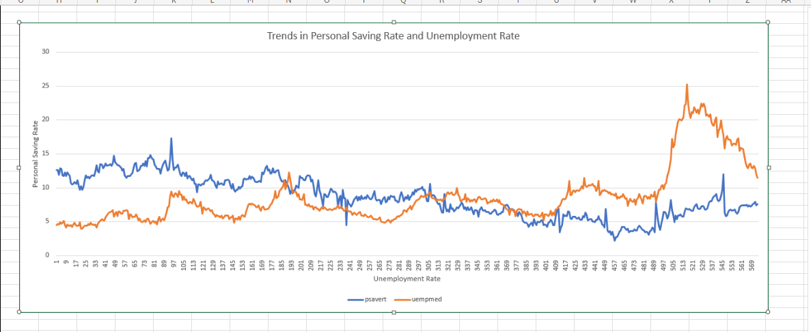
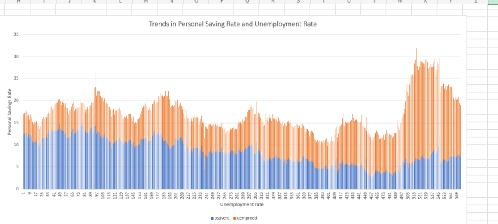
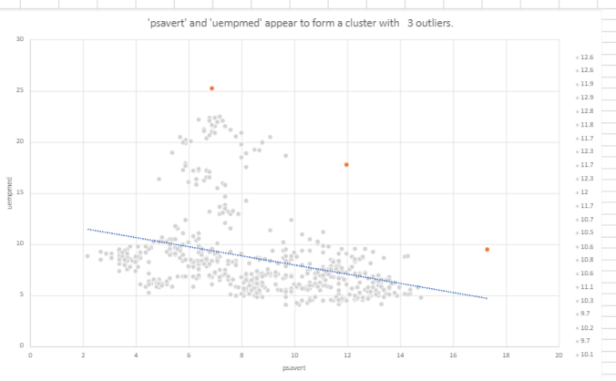
6.1.2 Friday
6.1.2.1 Class Activity
Today, we worked in class with our groups, focusing on our individual datasets. I chose to work with NASA Earth Data, a resource I’ll be utilizing throughout the semester.
6.1.2.2 Dataset Exploration
I began by exploring the NASA Earth Data portal, which offers a broad range of datasets across various topics like the atmosphere, earth quality, biosphere, human dimensions, and sun-earth interactions. Each main topic is further divided into subtopics, where users can download data in formats like CSV and Excel.
The portal also features a “Learn” section that provides tutorials and guides on how to read and use the data particularly useful for those new to the platform.
6.1.2.3 Dataset Selection
I was particularly interested in the “Human Dimensions” topic, which explores how humans interact with Earth’s resources. After filtering the available datasets by format (CSV and Excel) and sorting by the oldest end date, I selected the dataset titled Effects of Climate Change on Global Food Production from SRES Emissions and Socioeconomic Scenarios.
This dataset caught my attention because global food production has always been of interest to me, especially considering the drastic changes in soil quality and agricultural methods over the years. Additionally, the way human activities have affected the soil and food production varies significantly by country.
6.1.2.4 Dataset Overview
Climate Change and Global Food Production
Summary:
The agricultural sector is facing significant challenges due to population growth, land degradation, and urbanization, all of which threaten global food production. Climate change is expected to intensiy these challenges, particularly in regions vulnerable to drought and famine.
A NASA study used crop modeling to assess the impacts of climate change on food production. The study emphasizes that water availability and temperature are critical factors affecting crop yields. It also considers the effects of CO2 and suggests that climate change could have a significant impact on global food production, prices, and the risk of hunger.
6.1.2.5 Data Analysis
I downloaded the dataset and opened it in Excel to begin the data cleaning process. The dataset covers average crop production for various countries from 2000-2006. For this analysis, I focused on the variables: country code, wheat, rice, maize, and added a new variable for the year. I first calculated the mean, maximum, and minimum production values for each country for wheat, rice, and maize. China had the highest production values across all three variables—wheat, rice, and maize. On the other hand, Venezuela had the lowest production for wheat, Saudi Arabia for rice, and Japan for maize. To visualize this, I created a 100% stacked column chart. The graph shows that maize is the most produced crop across all countries, while wheat and rice exhibit irregular consistency over the years from 2000 to 2006.
.png)
Next, I created a pie chart to confirm my hypothesis. The chart reveals that maize has the highest average production among the three crops, suggesting it might be more widely cultivated or more important in global agriculture compared to wheat and rice. Rice also has a relatively high average production, indicating its global importance as a staple food. Wheat, despite having the lowest average production among the three, still shows a substantial amount.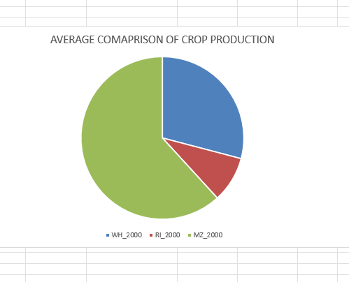
. Additionally, I created another stacked column chart to view the crop production across all 74 countries. This broader analysis revealed that China has the highest production numbers, while Switzerland has the lowest. I calculated the average production for each crop for each country and determined the maximum and minimum average production across the three crops for each country. The results show Switzerland with the lowest average production overall, and India with the second highest average production, as reflected in the graph.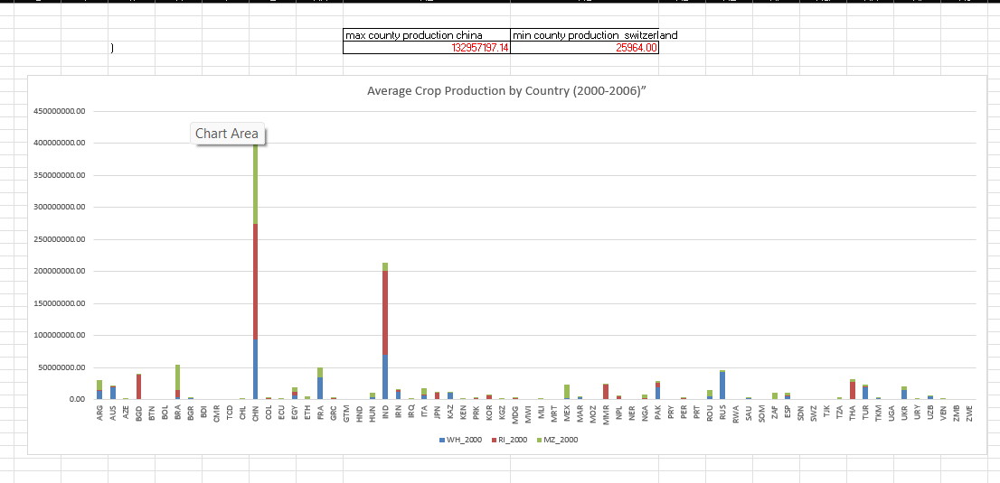
In the scatter plot, I observed a strong relationship between the production of wheat and rice. China and India were identified as clear outliers with extremely high production values for all crops. This plot helps in visualizing the tendencies and relationships between the production levels of different crops across countries.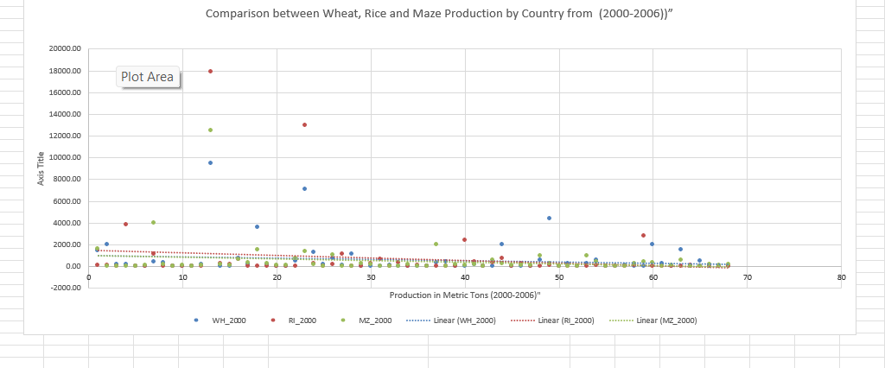
Then created a line graph to analyze production trends over time. Although China and India have the highest production points, the chart reveals a lack of consistency in their production levels. In contrast, wheat and maize, while showing lower production values, exhibit more consistent levels across countries. Nations with consistently low production lines may face agricultural challenges or have less focus on these crops.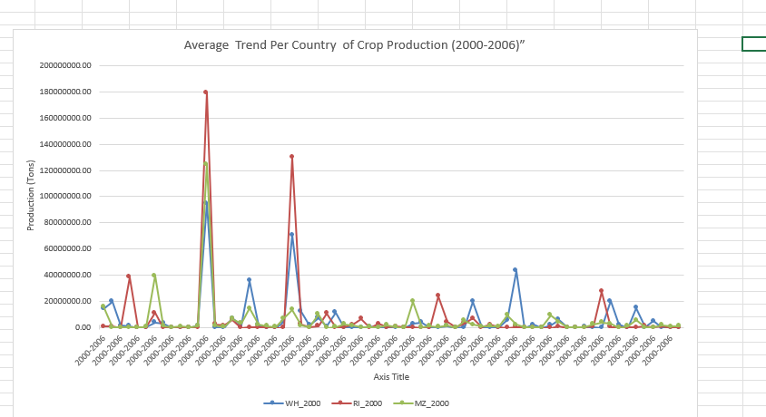
6.1.2.6 Summarize insights
China (CHN) leads in production with the highest values across all crops—wheat, rice, and maize—showing significant output in each category.
Switzerland (SW) exhibits the lowest production values across all crops, indicating minimal agricultural output.
China has the highest average production per country, reflecting its extensive agricultural operations and capacity.
Countries with low average production, such as Switzerland and Swaziland, highlight their limited agricultural activities and output.
Maize has the highest maximum production values across several countries, underscoring its significant role in global agriculture.
Rice shows high production values in several countries, including China and India, emphasizing its importance as a staple food.
Wheat production is relatively high in several countries but is not as dominant as maize or rice.
6.2 Week 2 - 09/02 ~ 09/06
6.2.1 Wednesday
6.2.1.1 New York Air Quality Dataset
6.2.1.1.1 Description
The dataset contains daily air quality measurements in New York from May to September 1973. It focuses on six key variables related to atmospheric conditions: ozone levels, solar radiation, wind speed, temperature, month, and day. The data helps analyze the relationship between these variables and environmental factors.
6.2.1.1.2 Variables
- Ozone (ppb): Measured between 1:00 PM and 3:00 PM at Roosevelt Island.
- Solar.R (Langleys): Solar radiation measured from 8:00 AM to 12:00 PM at Central Park.
- Wind (mph): Average wind speed at LaGuardia Airport, recorded between 7:00 AM and 10:00 AM.
- Temp (°F): Maximum daily temperature at LaGuardia Airport.
- Month: Numeric (1 = May, 9 = September).
- Day: Day of the month.
6.2.1.1.3 Source
Data was provided by the New York State Department of Conservation (ozone) and the National Weather Service (meteorological data).
6.2.1.2 Dataset and Data Cleaning
- We revisited the airquality_datasets.csv and created pivot tables.
- I Cleaned the data by creating filters and deleting NA values and empty cells, similar to what was done in the first week.
Introduction to Histograms Professor introduced histograms and their functions, showing their simplicity and effectiveness in presenting data. Exploratory Analysis: Ozone Levels Histogram: The histogram illustrates the variability in ozone levels over time. Key Insights: High ozone levels are notable, but moderate and low levels are more prevalent. Elevated levels are less frequent, while moderate and low concentrations are common.
.png)
6.2.1.3 Saving Files and Folder Organization
We learned how to save files properly for each week to ensure Quarto documents render correctly. Instructions: Save everything in the same folder for efficient document rendering.
Ozone vs. Temperature: Scatter Plot Analysis The professor demonstrated a scatter plot comparing ozone levels and temperature. Key Insights: Positive correlation: Higher ozone levels generally occur with higher temperatures. Extreme ozone levels (115, 135, 168) appear with temperatures ranging from 79 to 97. Moderate ozone levels occur between temperatures of 70s to mid-80s. Lower ozone levels align with cooler temperatures. Overall, the scatter plot shows a clear trend of higher ozone levels being linked to warmer temperatures but with significant variability.
.png)
6.2.1.4 Pivot Tables and Charts (Real Class Topic)
Pivot Table Basics:
- I Inserted a pivot table on a new sheet.
- Selected variables from the air quality dataset are to be inputted into rows and values. Month will go in row and temp , wind, solar r, ozone in values
- The professor explained the count, sum, and average options for data analysis.
- Finally, in class, we were asked to create our own version of a pivot table to understand, analyze, and interpret the data.
Key Insights: Higher temperatures and increased solar radiation are linked to higher ozone levels. As heat and sunlight rise, ozone levels generally increase, reflecting their strong correlation. Cooler temperatures and less sunlight lead to lower ozone concentrations, showing that both factors significantly influence ozone levels.
.png)
.png)
6.2.2 Friday 09/07/24
6.2.2.1 Work in class
today the professor wanted us to go back into the creation of pivot tables,but now we had to make charts from the pivot tables
we kept on using on the same data set from from airquality and now we had to come up with as much as possible pivot table.
6.2.2.1.1 Pivot Table 1: Comparative Analysis of Ozone, Solar Radiation, Wind, and Temperature by Month
- I did A “Comparative Analysis of Ozone, Solar Radiation, Wind, and Temperature by Month” using a clustered column chart
6.2.2.1.1.1 Key Insights:
1. Temperature: Highest in row 9 (2230) and lowest in row 6 (704), likely reflecting seasonal or geographic factors.
2.Wind: Highest wind speed in row 9 (292.2). Row 7 shows lower wind (221.6) despite high temperatures, suggesting terrain or local weather effects.
3 Solar Radiation: High solar radiation corresponds with high temperatures in rows 7 (5627) and 9 (4878). Lower radiation in row 8 (3981) could be due to cloud cover or atmospheric conditions.
4. Ozone: Ozone peaks in row 7 (1537), with no clear link to temperature, suggesting factors like pollution or altitude may influence levels.
5.Wind:Wind generally increases with temperature (row 9: 292.2), but in row 7, lower wind (221.6) despite high temperatures suggests local factors like terrain or weather conditions affecting wind patterns.
6.Solar Radiation:High solar radiation aligns with higher temperatures (row 7: 5627, row 9: 4878), though row 8’s lower radiation (3981) may be due to cloud cover or atmospheric conditions.
7.Ozone: Ozone peaks in row 7 (1537), but there’s no clear link to temperature, suggesting factors like pollution, altitude, or industrial activity might influence ozone levels.
.png)
.png)
6.2.2.1.2 Pivot Table 2: Minimum Levels of Ozone, Solar Radiation, Wind, and Temperature by Month
1.Solar Radiation: The lowest solar radiation is in row 7 (7), indicating minimal sunlight exposure, possibly due to increased cloud cover, shorter daylight hours, or winter months. Row 6 (37) and row 8 (24) are higher, suggesting more sunlight in those periods.
2.Temperature:Row 5 has the lowest temperature (57), possibly reflecting a colder season or location. Row 7 (73) represents a slightly warmer period but still marks the minimum temperature in that context.
3.Wind: The lowest wind speed is found in row 8 (2.3), likely due to calm conditions, while row 6 (8) shows stronger winds, possibly due to more open areas or seasonal wind patterns.
These findings point to cooler, calmer, and less sunny conditions in specific months or locations, affected by seasonal or environmental factors.
.png)
.png)
6.2.2.1.3 Pivot Table 3: Maximum Levels of Ozone, Solar Radiation, Wind, and Temperature by Month
1. Solar Radiation: The highest solar radiation is in row 5 (334), followed closely by row 6 (323). This suggests that these months or locations receive the most sunlight, likely due to clearer skies or longer daylight hours. Temperature:
2.Temperature: is in row 8 (97), reflecting a very warm period or location. Rows 7 (92) and 9 (93) also show high temperatures, indicating consistently hot conditions during these months. Wind:
3.Wind: is in row 6 (20.7), which may indicate exposure to more intense weather conditions or open areas. Row 5 (20.1) also shows similarly high wind levels, while other rows exhibit slightly lower values. These findings suggest that rows 5 and 6 experience peak solar radiation and wind, while row 8 stands out for its extreme temperature, reflecting the influence of seasonal or geographical factors on these maximum values.
.png)
.png)
6.2.2.1.4 Pivot Table 4: Average Levels of Ozone, Solar Radiation, Wind, and Temperature by Month
1,Solar Radiation: The highest average solar radiation is in row 7 (216.4), indicating that this month or location experiences the most consistent sunlight. Row 6 (184.2) and row 5 (182.0) also show relatively high averages, suggesting good sunlight exposure. Row 9 (168.2) and row 8 (173.1) have lower averages, possibly due to cloudier or less sunny periods. Temperature:
2.Temperature The highest average temperature is in row 7 (83.9), reflecting warmer conditions. Row 8 (83.7) also has a high average temperature, indicating similar warm conditions. Row 6 (78.2) and row 9 (76.9) are cooler, and row 5 (66.5) is the lowest, suggesting cooler temperatures during this period. Wind:
3. Wind The highest average wind speed is in row 6 (12.2), indicating stronger winds in that period. Row 5 (11.5) also shows relatively high wind speeds, while rows 7 (8.5), 8 (8.9), and 9 (10.1) have lower averages, suggesting calmer conditions.
.png)
.png)
6.2.2.1.5 Pivot Table 5: Sum of Ozone, Solar Radiation, Wind, and Temperature by Month
1.Temperature: The highest sum of temperature is in row 9 (2230), followed by row 7 (2181). This indicates warmer conditions in these periods. The lowest sum is in row 6 (704), showing cooler conditions. Ozone:
2.Ozone Row 7 has the highest total ozone (1537), suggesting higher ozone levels during this period. Row 5 has the lowest total ozone (579), indicating reduced ozone levels. Solar Radiation:
3.Solar R The highest sum of solar radiation is in row 7 (5627), suggesting the most sunlight exposure. Row 6 has the lowest sum (1658), indicating less solar radiation. Wind:
4.Wind The highest total wind is in row 9 (292.2), showing the most wind activity. Row 6 has the lowest total wind (109.6), reflecting calmer conditions. Trends:
Temperature and solar radiation generally increase over time from row 6 to row 9, indicating a trend towards warmer and sunnier conditions. Wind shows variability, with the highest value in row 9 and lower values in other rows, suggesting fluctuating wind patterns. Ozone levels are highest in row 7 and lower in row 5, indicating varying ozone concentrations over time.
.png)
.png)
6.2.2.2 Last Week 1 Dataset Overview
Climate Change and Global Food Production
You can download the data used in this analysis from the following link: https://www.earthdata.nasa.gov/
Study Overview
The study titled Effects of Climate Change on Global Food Production under SRES Emissions and Socio-Economic Scenarios is authored by Ana Iglesias from the Universidad Politécnica de Madrid and Cynthia Rosenzweig from NASA’s Goddard Institute for Space Studies. Published by NASA’s Socioeconomic Data and Applications Center (SEDAC) and managed by CIESIN at Columbia University in March 2010, this research delves into the impact of climate change on global staple crop production, focusing on wheat, rice, and maize.
Main Focus
The primary objective of this study is to assess how climate change might influence the production of staple crops on a global scale. By utilizing crop models and climate scenarios, the study simulates potential yield changes resulting from various environmental and socio-economic factors. It particularly highlights the risks posed by global warming on food security, with a focus on regions prone to drought and famine.
Key Variables
The dataset includes several key variables the only used right now where:
1. BLS_2_Countries_(SRES)_ABBREVNAME: This represents the name of the country (e.g., Australia).
2.Fips_code: The country code (e.g., AS for Australia)
3.WH_2000: Average wheat production from 2000 to 2006 in metric tons, sourced from the FAO.
4.RI_2000: Average rice production from 2000 to 2006 in metric tons, sourced from the FAO.
5.MZ_2000: Average maize production from 2000 to 2006 in metric tons, sourced from the FAO
The purpose of this research is to evaluate the impacts of climate change on crop yields, specifically in relation to changes in temperature and precipitation. The study aims to identify potential adaptations and variations in yields across different countries and regions. It provides valuable insights into global food supply, price fluctuations, and the risks of hunger exacerbated by climate changes.
6.3 Week 3 - 09/09 ~ 09/13
6.3.1 Wednesday 9/11/24
Here’s a review of Monday: 1. We were introduced to Tableau and spent time familiarizing ourselves with the platform. 2. Tableau Public is a free data visualization tool that allows users to create interactive and shareable dashboards. It is widely used due to its ability to handle large datasets, provide rich visualizations, and perform data cleaning and transformation tasks. This tutorial covered the basics of Tableau Public, including its main features, advantages over Excel, and step-by-step instructions on importing, cleaning, and visualizing data, as well as creating pivot tables and building dashboards using a sample dataset. 3. We created accounts to log in to Tableau Public. 4. Our professor gave us a guided tour of the website, showing how to start working with datasets and create simple visualizations. We also learned how to export datasets from Excel to Tableau.
Here’s Wednesday’s work:
- We continued working with Tableau, diving deeper into its functionality.
- I created my first visualization using the Orange_Dataset, focusing on the relationship between tree age and trunk circumference.
- This visualization was relatively simple, showcasing the difference and relationship between these variables.
- We posted our graphs in a discussion thread to compare progress and share insights with classmates.
Average of age and circumference :
https://public.tableau.com/app/profile/samuel.zelaya/viz/averageofageandcircumference/Sheet1

6.3.2 Friday 9/13/24
6.3.2.1 Data Preview
This dataset provides an assessment of potential climate change impacts on global staple crop production, focusing on wheat, rice, and maize. The dataset was developed to offer quantitative estimates of crop yield changes under different climate scenarios, including the impacts of temperature and precipitation changes on crop yields. It also incorporates the physiological effects of rising carbon dioxide levels on plant growth, and adaptation measures are considered in evaluating potential yields.
6.3.2.2 Data Categories:Production Data (2000-2006):
Wheat (WH_2000)
Rice (RI_2000)
Maize (MZ_2000)
6.3.2.3 Climate Scenario Yield Changes (2020, SRES A1FI):
Wheat (WHA1F2020): Projected percentage change in wheat yield.
Rice (RIA1F2020): Projected percentage change in rice yield.
Maize (MZA1F2020): Projected percentage change in maize yield.
6.3.2.4 Total Production Changes:
Wheat (ActChWHA1F2020): Change in total wheat production under the SRES A1FI 2020 scenario.
Rice (ActChRIAIF2020): Change in total rice production under the SRES A1FI 2020 scenario.
Maize (ActChMZA1F2020): Change in total maize production under the SRES A1FI 2020 scenario.
6.3.2.5 Actual Work
Today, we worked with NASA Earth Data as our primary dataset.
I cleaned the data and focused on the same variables as my previous homework: wheat, maize, and rice production levels. I also added three new important variables
The change in crop growth for wheat, maize, and rice from the year 2000 to 2020.
The projected changes in yield for these crops in 2020 due to climate change, using the A1F scenario.
CO2 levels and their impact on the change in crop yields from 1990 to 2020.
Key variables included:
WH_2000, RI_2000, MZ_2000 – Production levels of wheat, rice, and maize in 2000.
WHA1F2020, RIA1F2020, MZA1F2020 – Projected percentage change in yield for these crops in 2020 under the A1F climate scenario.
ActChWHA1F2020, ActChRIA1F2020, ActChMZA1F2020 – Actual changes in yield for these crops in 2020 under the A1F scenario.
CO2 levels and dY% – CO2 levels and percentage change in yield (dY%) for wheat, rice, and maize under different scenarios like A1FI, A2, B1, and B2.
I cleaned the data in Excel, highlighting the values that showed a decrease in red and those that showed an increase in green.
After cleaning, I imported the file into Tableau and started creating graphs to visualize the changes and trends.
6.3.2.6 Links to Visualization
Overall Crop Production - Sheet 1
Crop Production Per Country - Sheet 2
Crop Production Forecast for 2020 per Country - Sheet 3
Sum Of Actual Change 2000-2020 Per Country - Sheet 4
Crop Production Forecast Relationship - Sheet 5
Comparison between 2000 Production and 2020 Forecast Production - Sheet 6

6.4 Week 4 - 09/16 ~ 09/20
6.4.1 This is a markdown
in a markdown, we can create lists
-item 1
- item2
-item 3
also we can create enumae,rsted lists
1. hola
2. hello
3. namaste 6.4.2 Here we are importing numpy with a nickname np
print (np.absolute(-1))
import numpy as np
arr = np.array([1, 2, 3, 4, 5])
print(arr)1,2,3,4,5
6.4.3 List are native to python
my_list = [1, 2, 3, 4, 5]
print( my_list)[1, 2, 3, 4, 5]6.4.4 We will be using a lot of data frames , so we need pandas library
import pandas as pd
data = {'Ozone': [41, 36, 12], 'Temp': [67, 72, 74]}
df = pd.DataFrame(data)
print(df) Ozone Temp
0 41 67
1 36 72
2 12 746.4.4.1 Load CSV files
to load a.csv file into a Data Frame, use the pandas function read_.csv
df = pd.read_csv('airquality_datasets.csv')print(df.info())<class 'pandas.core.frame.DataFrame'>
RangeIndex: 153 entries, 0 to 152
Data columns (total 6 columns):
# Column Non-Null Count Dtype
--- ------ -------------- -----
0 Ozone 116 non-null float64
1 Solar.R 146 non-null float64
2 Wind 153 non-null float64
3 Temp 153 non-null int64
4 Month 153 non-null int64
5 Day 153 non-null int64
dtypes: float64(3), int64(3)
memory usage: 7.3 KB
None6.4.4.2 Visualizing data set
import matplotlib.pyplot as plt
# Ozone Histogram
plt.figure(figsize=(8, 6))
plt.hist(df['Ozone'].dropna(), bins=20, color='blue', edgecolor='black')
plt.title('Distribution of Ozone Levels')
plt.xlabel('Ozone (ppb)')
plt.ylabel('Frequency')
plt.show()
# Temp Histogram
plt.figure(figsize=(8, 6))
plt.hist(df['Temp'].dropna(), bins=20, color='orange', edgecolor='black')
plt.title('Distribution of Temperature')
plt.xlabel('Temperature (°F)')
plt.ylabel('Frequency')
plt.show()

#box plot
# Boxplot for Ozone
plt.figure(figsize=(8, 6))
plt.boxplot(df['Ozone'].dropna())
plt.title('Boxplot of Ozone Levels')
plt.ylabel('Ozone (ppb)')
plt.show()
# Boxplot for Temp
plt.figure(figsize=(8, 6))
plt.boxplot(df['Temp'].dropna())
plt.title('Boxplot of Temperature')
plt.ylabel('Temperature (°F)')
plt.show()

6.5 Week 5 - 09/23 ~ 09/27
6.5.1 Wednesday
6.5.1.1 Plotnine Tutorial: Understanding the Grammar of Graphics
6.5.1.1.1 1. Introduction to Plotnine
plotnine is a data visualization package for Python based on the Grammar of Graphics, which is a system for understanding and building plots. The grammar describes how plots are constructed by combining data, aesthetic mappings, geometric objects, and other components.
To begin, you’ll need to install the plotnine package if you don’t have it installed
pip install plotnine6.5.1.2 2. The Grammar of Graphics
6.5.1.2.1 The Grammar of Graphics consists of the following key components:
Data: The data you want to visualize. Aesthetics (aes): How the data is mapped to visual properties, such as x and y coordinates, color, size, etc. Geometries (geom): The type of plot, like points, lines, bars, etc. Facets: Subplots based on the data. Scales: Control the mapping from data to aesthetic properties. Coordinate systems: Adjust how data is projected on the plane (Cartesian, rotations, polar, etc.). Themes: Adjust the non-data elements like background, labels, gridlines, etc.
6.5.1.3 3. Creating Your First Plot
Let’s begin by creating a simple scatter plot using the famous mtcars dataset. We’ll show how to set up the basic structure and gradually build complexity.
# Import required libraries
import pandas as pd
from plotnine import ggplot, aes, geom_point, labs
# Load the mtcars dataset
mtcars = pd.read_csv('https://raw.githubusercontent.com/selva86/datasets/master/mtcars.csv')
mtcars.info()
# Create a basic scatter plot
(ggplot(mtcars, aes(x='wt', y='mpg')) +
geom_point() +
labs(title='Scatter Plot of MPG vs Weight',
x='Weight (1000 lbs)',
y='Miles per Gallon'))<class 'pandas.core.frame.DataFrame'>
RangeIndex: 32 entries, 0 to 31
Data columns (total 14 columns):
# Column Non-Null Count Dtype
--- ------ -------------- -----
0 mpg 32 non-null float64
1 cyl 32 non-null int64
2 disp 32 non-null float64
3 hp 32 non-null int64
4 drat 32 non-null float64
5 wt 32 non-null float64
6 qsec 32 non-null float64
7 vs 32 non-null int64
8 am 32 non-null int64
9 gear 32 non-null int64
10 carb 32 non-null int64
11 fast 32 non-null int64
12 cars 32 non-null object
13 carname 32 non-null object
dtypes: float64(5), int64(7), object(2)
memory usage: 3.6+ KB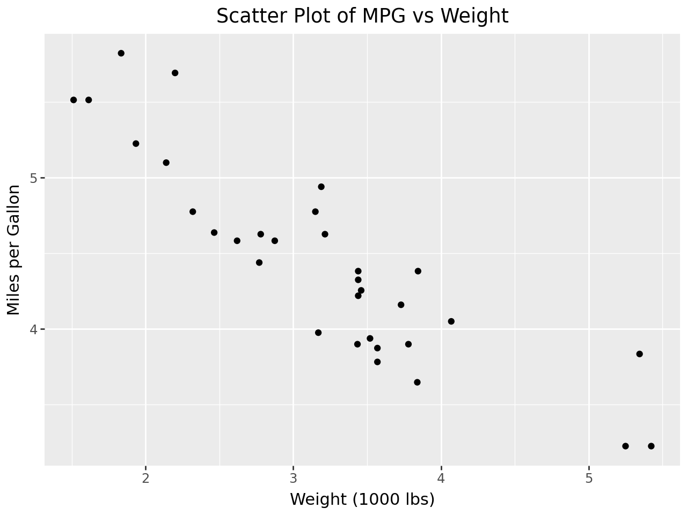
6.5.1.4 4. Adding Aesthetic Mappings
In the Grammar of Graphics, aesthetics control how data points are represented visually. You can map variables to size, color, shape, and more.
6.5.1.4.1 Example: Color by cyl (number of cylinders)
(ggplot(mtcars, aes(x='wt', y='mpg', color='factor(cyl)')) +
geom_point() +
labs(title='MPG vs Weight by Cylinder',
x='Weight (1000 lbs)',
y='Miles per Gallon',
color='Cylinders'))
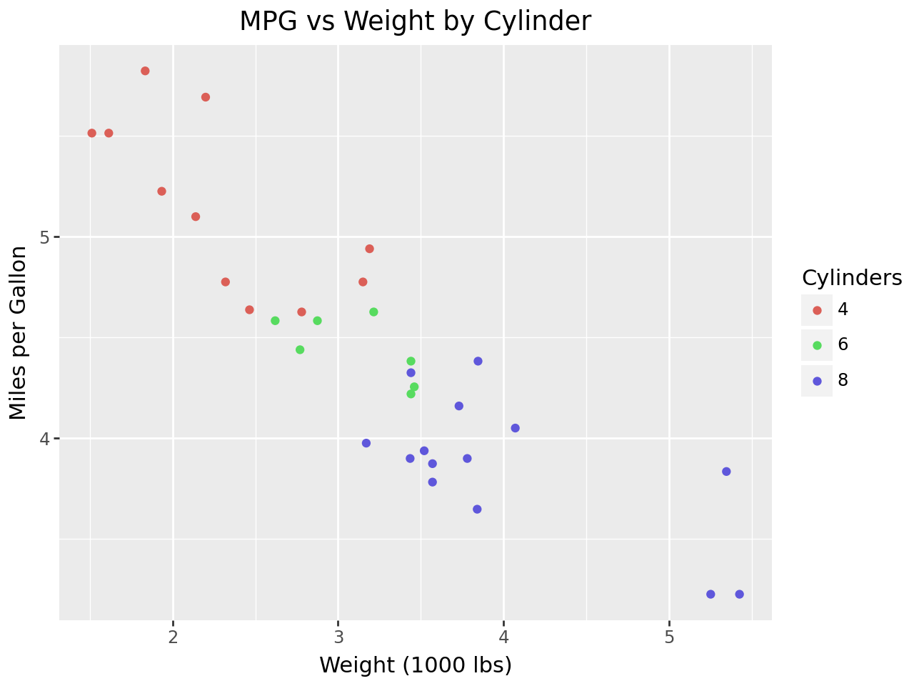
6.5.1.5 Example: Size by horsepower (hp)
(ggplot(mtcars, aes(x='wt', y='mpg', color='factor(cyl)', size='hp')) +
geom_point() +
labs(title='MPG vs Weight by Cylinder and Horsepower',
x='Weight (1000 lbs)',
y='Miles per Gallon',
color='Cylinders',
size='Horsepower'))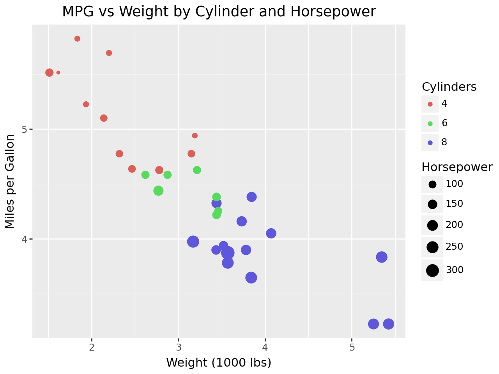
6.5.1.6 5. Geometric Objects
geom_* specifies the type of plot. You can create scatter plots, line charts, bar plots, histograms, etc.
from plotnine import geom_smooth
(ggplot(mtcars, aes(x='wt', y='mpg')) +
geom_point() +
geom_smooth(method='lm') + # Linear regression line
labs(title='MPG vs Weight with Regression Line',
x='Weight (1000 lbs)',
y='Miles per Gallon'))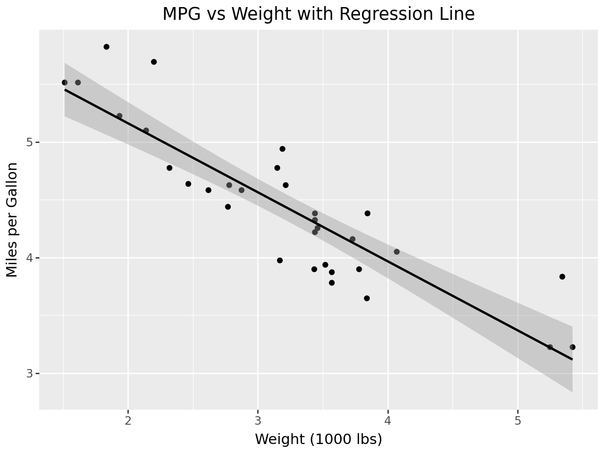
6.5.1.7 6. Faceting
Faceting allows you to split your plot into multiple panels based on a factor.
6.5.1.7.1 Example: Facet by cyl
from plotnine import facet_wrap
(ggplot(mtcars, aes(x='wt', y='mpg')) +
geom_point() +
facet_wrap('~cyl') + # Split into subplots by cylinders
labs(title='MPG vs Weight Faceted by Cylinder',
x='Weight (1000 lbs)',
y='Miles per Gallon'))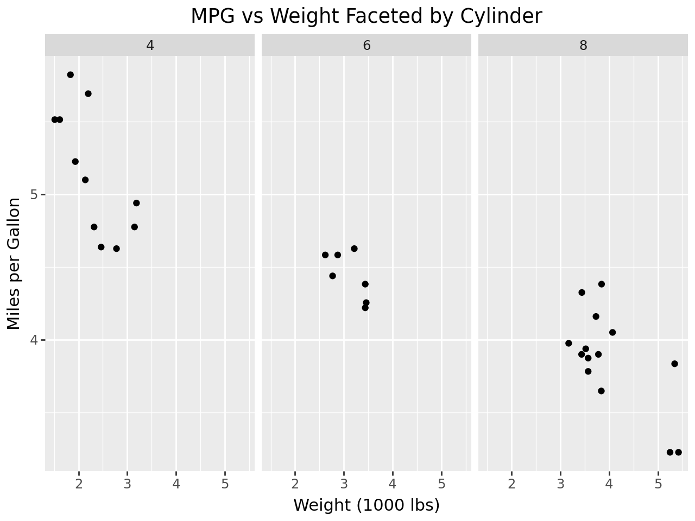
6.5.1.8 7. Customizing Scales
Scales control the mapping from data to aesthetic attributes. You can customize scales for color, size, and more.
6.5.1.8.1 Example: Custom Color Scale
from plotnine import scale_color_manual
(ggplot(mtcars, aes(x='wt', y='mpg', color='factor(cyl)')) +
geom_point() +
scale_color_manual(values=['#1f77b4', '#ff7f0e', '#2ca02c']) + # Custom colors
labs(title='MPG vs Weight with Custom Colors',
x='Weight (1000 lbs)',
y='Miles per Gallon',
color='Cylinders'))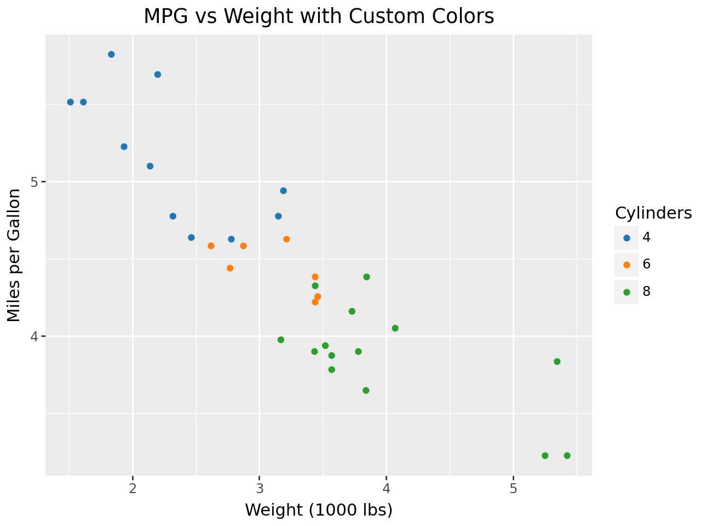
6.5.1.9 8. Flip Coordinates
Create a bar plot showing distribution of cylinders
6.5.1.9.1 Example: Fliping coordinates axis
import pandas as pd
from plotnine import geom_bar, coord_flip, labs
# Create a bar plot showing distribution of cylinders
(ggplot(mtcars, aes(x='factor(cyl)', fill='factor(cyl)')) +
geom_bar(width=1) +
coord_flip() + # Flip coordinates as a simple workaround
labs(title='Distribution of Cylinders',
x='Cylinders',
fill='Cylinders'))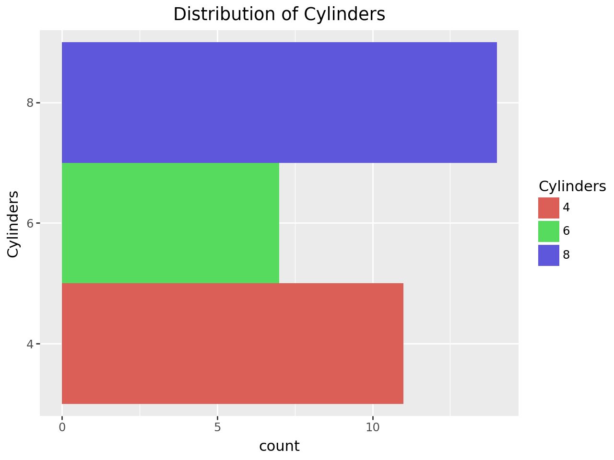
6.5.1.10 9. Themes
Themes allow you to adjust the non-data aspects of the plot, such as background, axis labels, and gridlines.
6.5.1.10.1 Example: Apply a Minimal Theme
from plotnine import theme_minimal
(ggplot(mtcars, aes(x='wt', y='mpg')) +
geom_point() +
theme_minimal() + # Minimalistic theme
labs(title='MPG vs Weight with Minimal Theme',
x='Weight (1000 lbs)',
y='Miles per Gallon'))
6.5.1.11 10. Saving the Plot
You can save your plot using the save method.
6.5.1.11.1 Example: Save the plot
# Save the plot to a file
p = (ggplot(mtcars, aes(x='wt', y='mpg')) +
geom_point() +
labs(title='MPG vs Weight',
x='Weight (1000 lbs)',
y='Miles per Gallon'))
p.save("mpg_vs_weight.png")
p = (ggplot(mtcars, aes(x='wt', y='mpg', color='factor(cyl)')) +
geom_point() +
labs(title='MPG vs Weight by Cylinder',
x='Weight (1000 lbs)',
y='Miles per Gallon',
color='Cylinders'))
p.save("mpg_vs_weight_by_cylinder.png")
p = (ggplot(mtcars, aes(x='wt', y='mpg', color='factor(cyl)', size='hp')) +
geom_point() +
labs(title='MPG vs Weight by Cylinder and Horsepower',
x='Weight (1000 lbs)',
y='Miles per Gallon',
color='Cylinders',
size='Horsepower'))
p.save("mpg_vs_weight_by_cylinder_and_horsepower.png")
p = (ggplot(mtcars, aes(x='wt', y='mpg')) +
geom_point() +
geom_smooth(method='lm') + # Linear regression line
labs(title='MPG vs Weight with Regression Line',
x='Weight (1000 lbs)',
y='Miles per Gallon'))
p.save("mpg_vs_weight_with_regression_line.png")
p = (ggplot(mtcars, aes(x='wt', y='mpg')) +
geom_point() +
facet_wrap('~cyl') + # Split into subplots by cylinders
labs(title='MPG vs Weight Faceted by Cylinder',
x='Weight (1000 lbs)',
y='Miles per Gallon'))
p.save("mpg_vs_weight_faceted_by_cylinder.png")
p = (ggplot(mtcars, aes(x='wt', y='mpg', color='factor(cyl)')) +
geom_point() +
scale_color_manual(values=['#1f77b4', '#ff7f0e', '#2ca02c']) + # Custom colors
labs(title='MPG vs Weight with Custom Colors',
x='Weight (1000 lbs)',
y='Miles per Gallon',
color='Cylinders'))
p.save("mpg_vs_weight_with_custom_colors.png")
p = (ggplot(mtcars, aes(x='factor(cyl)', fill='factor(cyl)')) +
geom_bar(width=1) +
coord_flip() + # Flip coordinates as a simple workaround
labs(title='Distribution of Cylinders',
x='Cylinders',
fill='Cylinders'))
p.save("distribution_of_cylinders.png")
p = (ggplot(mtcars, aes(x='wt', y='mpg')) +
geom_point() +
theme_minimal() + # Minimalistic theme
labs(title='MPG vs Weight with Minimal Theme',
x='Weight (1000 lbs)',
y='Miles per Gallon'))
p.save("MPG vs Weight with Minimal Theme.png")C:\Users\Samuel Zelaya\venv477\Lib\site-packages\plotnine\ggplot.py:606: PlotnineWarning: Saving 6.4 x 4.8 in image.
C:\Users\Samuel Zelaya\venv477\Lib\site-packages\plotnine\ggplot.py:607: PlotnineWarning: Filename: mpg_vs_weight.png
C:\Users\Samuel Zelaya\venv477\Lib\site-packages\plotnine\ggplot.py:606: PlotnineWarning: Saving 6.4 x 4.8 in image.
C:\Users\Samuel Zelaya\venv477\Lib\site-packages\plotnine\ggplot.py:607: PlotnineWarning: Filename: mpg_vs_weight_by_cylinder.png
C:\Users\Samuel Zelaya\venv477\Lib\site-packages\plotnine\ggplot.py:606: PlotnineWarning: Saving 6.4 x 4.8 in image.
C:\Users\Samuel Zelaya\venv477\Lib\site-packages\plotnine\ggplot.py:607: PlotnineWarning: Filename: mpg_vs_weight_by_cylinder_and_horsepower.png
C:\Users\Samuel Zelaya\venv477\Lib\site-packages\plotnine\ggplot.py:606: PlotnineWarning: Saving 6.4 x 4.8 in image.
C:\Users\Samuel Zelaya\venv477\Lib\site-packages\plotnine\ggplot.py:607: PlotnineWarning: Filename: mpg_vs_weight_with_regression_line.png
C:\Users\Samuel Zelaya\venv477\Lib\site-packages\plotnine\ggplot.py:606: PlotnineWarning: Saving 6.4 x 4.8 in image.
C:\Users\Samuel Zelaya\venv477\Lib\site-packages\plotnine\ggplot.py:607: PlotnineWarning: Filename: mpg_vs_weight_faceted_by_cylinder.png
C:\Users\Samuel Zelaya\venv477\Lib\site-packages\plotnine\ggplot.py:606: PlotnineWarning: Saving 6.4 x 4.8 in image.
C:\Users\Samuel Zelaya\venv477\Lib\site-packages\plotnine\ggplot.py:607: PlotnineWarning: Filename: mpg_vs_weight_with_custom_colors.png
C:\Users\Samuel Zelaya\venv477\Lib\site-packages\plotnine\ggplot.py:606: PlotnineWarning: Saving 6.4 x 4.8 in image.
C:\Users\Samuel Zelaya\venv477\Lib\site-packages\plotnine\ggplot.py:607: PlotnineWarning: Filename: distribution_of_cylinders.png
C:\Users\Samuel Zelaya\venv477\Lib\site-packages\plotnine\ggplot.py:606: PlotnineWarning: Saving 6.4 x 4.8 in image.
C:\Users\Samuel Zelaya\venv477\Lib\site-packages\plotnine\ggplot.py:607: PlotnineWarning: Filename: MPG vs Weight with Minimal Theme.png6.5.2 Friday

This bar plot provides a visual comparison of crop yield changes influenced by climate change, specifically for essential staple crops such as wheat, rice, and maize. It illustrates how different scenarios and time periods impact agricultural production and compares crop yield changes across different scenarios and time periods.
6.5.2.1 Dataset Overview
Climate Change and Global Food Production
Summary:
The agricultural sector is facing significant challenges due to population growth, land degradation, and urbanization, all of which threaten global food production. Climate change is expected to intensiy these challenges, particularly in regions vulnerable to drought and famine.
A NASA study used crop modeling to assess the impacts of climate change on food production. The study emphasizes that water availability and temperature are critical factors affecting crop yields. It also considers the effects of CO2 and suggests that climate change could have a significant impact on global food production, prices, and the risk of hunger.
You can download the data used in this analysis from the following link: https://www.earthdata.nasa.gov/
Study Overview
The study titled Effects of Climate Change on Global Food Production under SRES Emissions and Socio-Economic Scenarios is authored by Ana Iglesias from the Universidad Politécnica de Madrid and Cynthia Rosenzweig from NASA’s Goddard Institute for Space Studies. Published by NASA’s Socioeconomic Data and Applications Center (SEDAC) and managed by CIESIN at Columbia University in March 2010, this research delves into the impact of climate change on global staple crop production, focusing on wheat, rice, and maize.
Main Focus
The primary objective of this study is to assess how climate change might influence the production of staple crops on a global scale. By utilizing crop models and climate scenarios, the study simulates potential yield changes resulting from various environmental and socio-economic factors. It particularly highlights the risks posed by global warming on food security, with a focus on regions prone to drought and famine.
Key Variables
The dataset includes several key variables the only used right now where:
1. BLS_2_Countries_(SRES)_ABBREVNAME: This represents the name of the country (e.g., Australia).
2.Fips_code: The country code (e.g., AS for Australia)
3.WH_2000: Average wheat production from 2000 to 2006 in metric tons, sourced from the FAO.
4.RI_2000: Average rice production from 2000 to 2006 in metric tons, sourced from the FAO.
5.MZ_2000: Average maize production from 2000 to 2006 in metric tons, sourced from the FAO
The purpose of this research is to evaluate the impacts of climate change on crop yields, specifically in relation to changes in temperature and precipitation. The study aims to identify potential adaptations and variations in yields across different countries and regions. It provides valuable insights into global food supply, price fluctuations, and the risks of hunger exacerbated by climate changes.